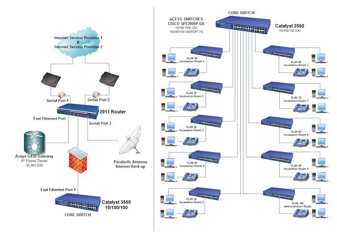
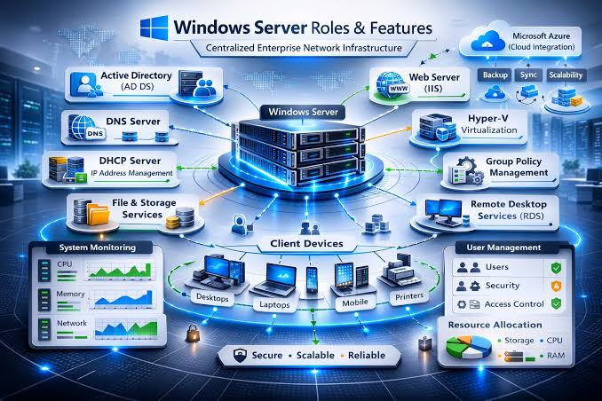

I build, configure, troubleshoot, and document practical enterprise networking environments using Cisco, GNS3, VLANs, OSPF, Active Directory, DHCP, DNS, pfSense, FortiGate, and network security technologies.
From networking concepts to working enterprise lab environments.
I am an IT graduate with a strong interest in networking, IT infrastructure, and network security. I enjoy turning theoretical concepts into practical working environments.
My approach is hands-on: design the topology, configure the devices, test connectivity, troubleshoot problems, and document the final implementation.
My practical learning includes Cisco networking, VLANs, routing, switching, OSPF, DHCP, DNS, Active Directory, firewalls, and network troubleshooting.
I use GNS3 to build simulated enterprise environments and continuously expand my networking and infrastructure skills through practical projects.
Networking technologies, infrastructure tools, and concepts I have worked with through study and practical labs.
Real GNS3-based labs designed, configured, tested, and documented.

Designed and configured a multi-site enterprise network in GNS3 using Cisco routers and switches.

Designed and implemented a Windows Server-based enterprise lab environment in GNS3.
Hands-on IT administration and networking experience.
Academic foundation supporting my IT and networking career.
Studied Information Technology with a focus on computer networking, network administration, databases, operating systems, and IT infrastructure.
Developed practical knowledge through hands-on labs and projects involving Cisco networking, VLANs, routing, OSPF, DHCP, DNS, Active Directory, firewall configuration, and network troubleshooting.
Interested in networking, IT infrastructure, or professional opportunities? Feel free to connect with me through LinkedIn or explore my technical projects on GitHub.